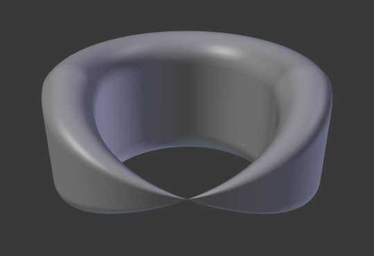
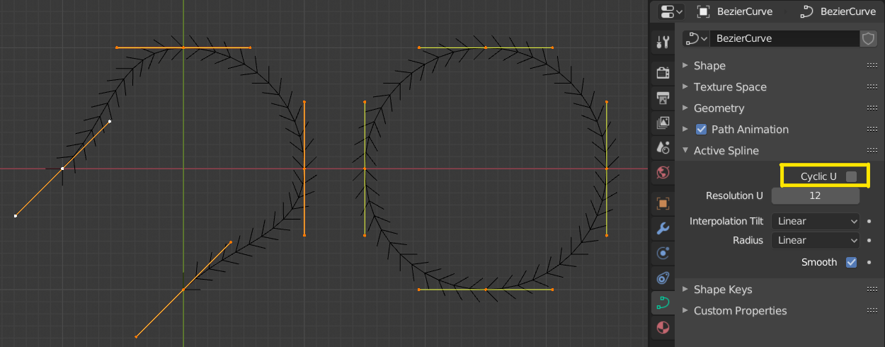

Curve¶
Trang này bao gồm những kiến thức cơ bản về chỉnh sửa curve.
Transform¶
Tham khảo
- Mode:
Edit Mode
- Menu:
Một curve Bézier có thể được chỉnh sửa bằng cách biến đổi vị trí của cả điểm điều khiển lẫn handle. Ngược lại, curve NURBS chỉ có các điểm điều khiển.
- Move, Rotate, Scale
Giống như các phần tử khác trong Blender, các điểm điều khiển và handle của curve có thể được di chuyển, xoay hoặc scale như mô tả trong Biến đổi cơ bản.
- To Sphere, Shear, Bend, Push/Pull, Warp, Randomize
Các công cụ biến đổi được mô tả trong các phần Biến đổi.
Radius¶
Tham khảo
- Mode:
Edit Mode
- Tool:
- Menu:
- Shortcut:
Alt-S
Điều khiển độ rộng của phần extrude dọc theo curve "xương sống". Bán kính sẽ được nội suy từ điểm này sang điểm kia (bạn có thể kiểm tra bằng normals). Radius của các điểm được đặt bằng công cụ biến đổi Radius, hoặc trong panel Transform của Sidebar.


Bán kính của một điểm điều khiển được đặt bằng không.¶
Mirror¶
Tham khảo
- Mode:
Edit Mode
- Menu:
- Shortcut:
Ctrl-M
Công cụ Mirror cũng khả dụng, hoạt động y hệt như với vertex của mesh.
Snap¶
Tham khảo
- Mode:
Edit Mode
- Menu:
- Shortcut:
Shift-S
Snap mesh cũng hoạt động với các thành phần của curve. Cả điểm điều khiển lẫn handle của chúng đều chịu ảnh hưởng của snapping, ngoại trừ snapping với chính nó (các thành phần khác của curve active). Snapping hoạt động với curve 2D nhưng các điểm sẽ bị giới hạn trên các trục XY cục bộ.
Spin¶
Tham khảo
- Mode:
Edit Mode
- Menu:
Operator Spin chỉ hoạt động cho các object surface một chiều. Hiện tại không thể dùng nó cho curve; tính năng đầy đủ được tài liệu hóa trong Chỉnh sửa Surface.
Add Duplicate¶
Tham khảo
- Mode:
Edit Mode
- Menu:
- Shortcut:
Shift-D
Nhân đôi các điểm điều khiển đang chọn, cùng với các đoạn curve được chọn ngầm (nếu có). Nếu chỉ một handle được chọn, toàn bộ điểm đó cũng sẽ được nhân đôi. Bản sao ở trạng thái được chọn nên bạn có thể di chuyển nó đến nơi khác.
Split¶
Tham khảo
- Mode:
Edit Mode
- Menu:
- Shortcut:
Y
Operator Split tách phần đã chọn của một curve khỏi phần còn lại, tạo thành một đoạn curve mới độc lập. Curve này sau đó có thể được di chuyển hay chỉnh sửa mà không ảnh hưởng đến curve kia.
Nếu một đoạn của curve được chọn, nó sẽ được tách thành một curve mới có thể di chuyển hay chỉnh sửa độc lập.
Nếu chỉ một điểm điều khiển duy nhất được chọn, nó sẽ được nhân đôi thành một điểm điều khiển rời rạc, còn điểm gốc vẫn gắn với phần còn lại của curve.
Separate¶
Tham khảo
- Mode:
Edit Mode
- Menu:
- Shortcut:
P
Tách các curve object gồm nhiều curve khác biệt thành các object riêng của chúng.
Lưu ý, nếu trong một Curve object chỉ có duy nhất một curve, thao tác này sẽ tạo một Curve object mới không có điểm điều khiển nào.
Toggle Cyclic¶
Tham khảo
- Mode:
Edit Mode
- Menu:
- Shortcut:
Alt-C
Chuyển đổi giữa curve hở và curve khép kín (Cyclic). Chỉ những curve có ít nhất một điểm điều khiển được chọn mới bị đóng/mở. Hình dạng của đoạn khép kín dựa trên handle đầu và handle cuối đối với curve Bézier, và như thường lệ là dựa trên các điểm điều khiển liền kề đối với NURBS. Trường hợp duy nhất một handle được điều chỉnh sau khi đóng là khi handle đó thuộc kiểu Auto. Hình Curve hở và curve khép kín. là cùng một curve Bézier ở trạng thái hở và khép kín.
Thao tác này chỉ tác động lên điểm điều khiển bắt đầu gốc hoặc điểm điều khiển được thêm sau cùng. Việc xóa một hay nhiều đoạn không thay đổi cách thao tác áp dụng; nó vẫn chỉ tác động lên điểm bắt đầu và điểm cuối cùng. Điều này có nghĩa là Alt-C trên thực tế có thể nối hai curve lại thay vì đóng một curve duy nhất! Hãy nhớ rằng khi một curve 2D được đóng, nó tạo ra một mặt phẳng có thể render.

Curve hở và curve khép kín.¶
Set Spline Type¶
Tham khảo
- Mode:
Edit Mode
- Menu:
- Shortcut:
V
Chuyển đổi các spline trong một curve object qua lại giữa các kiểu Bézier, NURBS, Poly và Catmull Rom. Đây là phép chuyển đổi cơ bản, nghĩa là Blender không bảo toàn hình dạng chính xác hay số lượng điểm điều khiển. Ví dụ, chuyển một spline NURBS sang spline Bézier sẽ ánh xạ mỗi nhóm ba điểm điều khiển NURBS thành một điểm điều khiển Bézier duy nhất với hai handle.
- Type
Chỉ định kiểu spline đích. Để biết thêm chi tiết về các kiểu spline, xem tài liệu Các kiểu Spline.
- Bézier:
Chuyển spline sang kiểu Bézier. - Spline Poly được chuyển với handle vector. - Spline NURBS hoặc Catmull Rom được chuyển với handle automatic.
Ghi chú
Khi chuyển một spline NURBS sang Bézier, cần có ít nhất sáu điểm. Nếu số điểm không phải là bội số của ba, spline sẽ bị cắt ngắn.
- NURBS:
Chuyển spline sang kiểu NURBS.
- Poly:
Chuyển spline sang kiểu poly.
- Handles
Bao gồm thông tin handle trong quá trình chuyển đổi.
Show/Hide¶
Tham khảo
- Mode:
Edit Mode
- Menu:
- Shortcut:
Alt-H, H, Shift-H
Khi ở trong Edit Mode, bạn có thể ẩn và hiện lại các phần tử khỏi màn hình. Bạn chỉ có thể hiện hoặc ẩn các điểm điều khiển, vì các đoạn luôn được hiển thị, trừ khi tất cả điểm điều khiển của curve kết nối đều bị ẩn, khi đó curve sẽ bị ẩn hoàn toàn.
Xem Show/Hide trong Object Mode. Xem thêm panel Hiển thị Curve.
Clean Up¶
Decimate Curve¶
Tham khảo
- Mode:
Edit Mode
- Menu:
Operator Decimate Curve giảm số lượng điểm điều khiển trong khi vẫn cố giữ hình dạng ban đầu của curve. Operator này hoạt động tương tự như bản tương ứng trên mesh.
- Ratio
Tỷ lệ phần trăm số điểm điều khiển sẽ bị loại bỏ.
Ghi chú
Công cụ này chỉ có thể decimate curve Bézier.
Delete¶
Tham khảo
- Mode:
Edit Mode
- Menu:
- Shortcut:
X, Delete
Các tùy chọn của menu bật lên Delete:
- Vertices
Cách này sẽ xóa các điểm điều khiển đang chọn mà không làm đứt curve (tức là các điểm liền kề sẽ được nối trực tiếp với nhau sau khi các điểm trung gian bị xóa). Hãy nhớ rằng bậc (order) của NURBS không thể cao hơn số điểm điều khiển của nó, nên bậc có thể giảm khi bạn xóa bớt điểm điều khiển. Tất nhiên, khi chỉ còn một điểm, sẽ không còn nhìn thấy curve, và khi tất cả các điểm bị xóa, chính curve cũng bị xóa.
- Segment
Xóa đoạn nối các điểm điều khiển đang chọn và ngắt kết nối chúng.
Dissolve Vertices¶
Tham khảo
- Mode:
Edit Mode
- Menu:
- Shortcut:
Ctrl-X
Xóa các điểm điều khiển đang chọn, trong khi đoạn còn lại được khớp vào phần curve đã xóa bằng cách điều chỉnh các handle của nó.